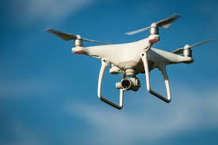
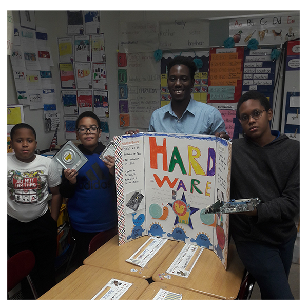
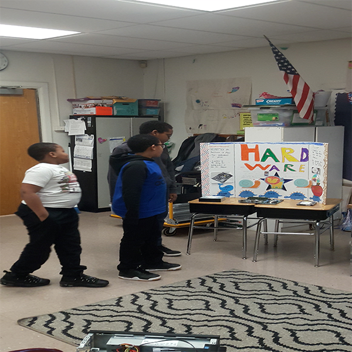

This page has some of the things I like.

- play fortnite
- go to new york city
- playing sports
- learning new things
- taking the L


Things I learned in Morrison & mentors

In hardware,we opened computers and took all the parts out, such as the hardrive, motherboard, and the DvD rom. Later we did posterboards about hardware. I did the motherbard and the hardrive. The motherboard holds all the hardware in place. And the hardrive stores all the data for work and games.
In unity, we built our own games and we added vehicles such as jets and cars.We also created mountains,trees,and even water in our worlds.We also learned how to create characters.

When we were working with drones, we learned to code the drones, we even had a hovercraft race. Our drones crashed sometimes, but we never gave up.
 